Decompile Adventure Game Studio game scripts on Windows — no command line required.
This guide walks you through extracting compiled AGS scripts from a game with AGSUnpacker, opening them in Ghidra 10.4 with the ReAGS extension, and exporting pseudo-C decompilation output. It is written for Windows users and gamers who are new to Ghidra and reverse engineering.
.exe file (your copy of the game you want to inspect)AGSUnpacker.exe refuses to start).scom3 script files extracted from the game.c file with Ghidra's pseudo-C decompilation attempt (one file per imported script)Important: Use AGSUnpacker for the extraction step. Do not substitute another tool for that part.
| Tool | Version / file | Link |
|---|---|---|
| AGSUnpacker | v010 — AGSUnpacker_v010_x64.zip (~452 KB) → run AGSUnpacker.exe |
AGSUnpacker v010 release |
| Ghidra | 10.4 — ghidra_10.4_PUBLIC_20230928.zip (~353 MB) |
Ghidra 10.4 release (direct zip) · All releases |
| ReAGS | 20240301 — ghidra_10_4_PUBLIC_20240301_ReAGS.zip (~64 KB) · Ghidra 10.4 only |
ReAGS 20240301 release |
| Temurin JDK | 17+ (64-bit) — Ghidra requires a JDK; we use Temurin below, but other installs work | Adoptium Temurin JDK 17 |
.scom3 scripts with AGSUnpackerAGS games store compiled scripts inside the game data. AGSUnpacker pulls those out as .scom3 files you can open in Ghidra.
AGSUnpacker_v010_x64.zip (~452 KB) from the AGSUnpacker v010 release.AGSUnpacker_v010_x64 containing AGSUnpacker.exe and a few support files.AGSUnpacker.exe to open the program.Unpack Assets and select your game's .exe file.Extract Scripts from Assets.scripts folder containing many .scom3 files — including globalscript.scom3 (the main game script) and room scripts such as room1.scom3, room2.scom3, etc.scripts folder — same directory as the unpacked assets? Next to the game .exe?]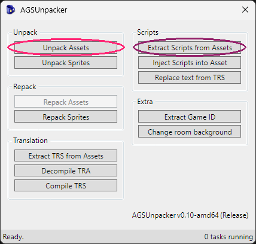
Tip: Run
Unpack AssetsbeforeExtract Scripts from Assets. Leave the.scom3files where AGSUnpacker puts them — you will import one into Ghidra in a later step.globalscript.scom3is a good first choice.
ReAGS is built for Ghidra 10.4 only. At the time of writing, ReAGS 20240301 is the only release — do not mix it with other Ghidra versions.
ghidra_10.4_PUBLIC_20230928.zip (~353 MB) from the Ghidra 10.4 release.ghidra_10.4_PUBLIC (unpacked size is roughly 1 GB).C:\Tools\ghidra_10.4_PUBLIC or your Desktop.ghidra_10.4_PUBLIC folder and find ghidraRun.bat in its root (same level as the Ghidra and support folders).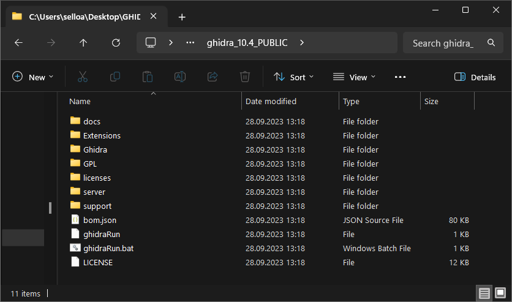
Ghidra always needs a Java Development Kit — it does not include one. Assume you need to install one unless you already know you have a compatible JDK on your PC.
Ghidra 10.4 officially requires a 64-bit JDK 17 or newer. An older or 32-bit Java install on your system will not work.
This guide uses Eclipse Temurin because it is easy to download and install on Windows. You can use another JDK instead — what matters is that it is recent enough, 64-bit, and that you know where it was installed.
.msi installer (example filename: OpenJDK25U-jdk_x64_windows_hotspot_25.0.3_9.msi if you pick a newer Temurin build, ~112 MB).bin\java.exe, not the bin folder itself. It is usually:C:\Users\YourName\AppData\Local\Programs\Eclipse Adoptium\jdk-25.0.3.9-hotspot
Replace YourName with your Windows username and adjust the version number to match what you installed.
Tip: Open that folder in File Explorer and confirm you see a
binsubfolder withjava.exeinside. If you only seejava.exedirectly, go up one level — that parent folder is your JDK home.
ghidraRun.bat (from Step 2).\bin at the end). If a file picker appears, browse to that same folder and confirm.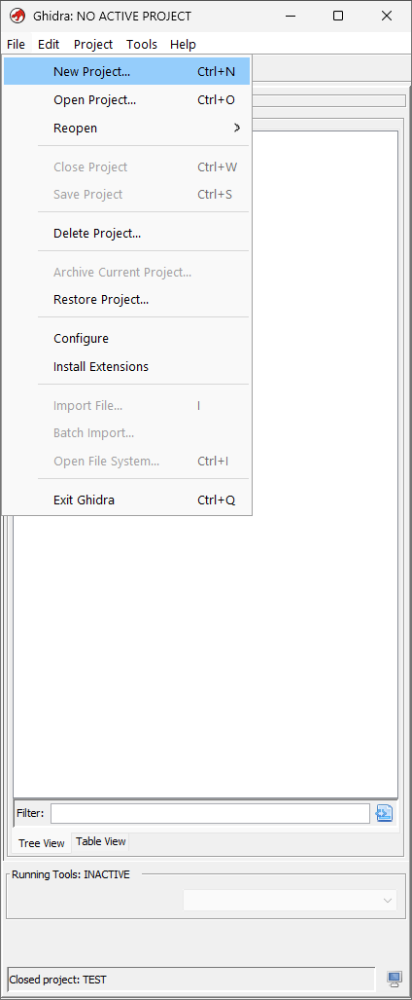
If Ghidra opens to the Project Manager, continue to Step 5 (Install ReAGS).
If you see Failed to find a supported JDK or Java runtime not found, double-check Step 3 — wrong folder, too old a Java version, or a 32-bit install are the usual causes.
ReAGS teaches Ghidra how to read AGS .scom3 script files. Download it from the only release published so far:
ghidra_10_4_PUBLIC_20240301_ReAGS.zip (~64 KB) from ReAGS 20240301.File → Install Extensions....zip file and click OK.OK to close the Install Extensions window.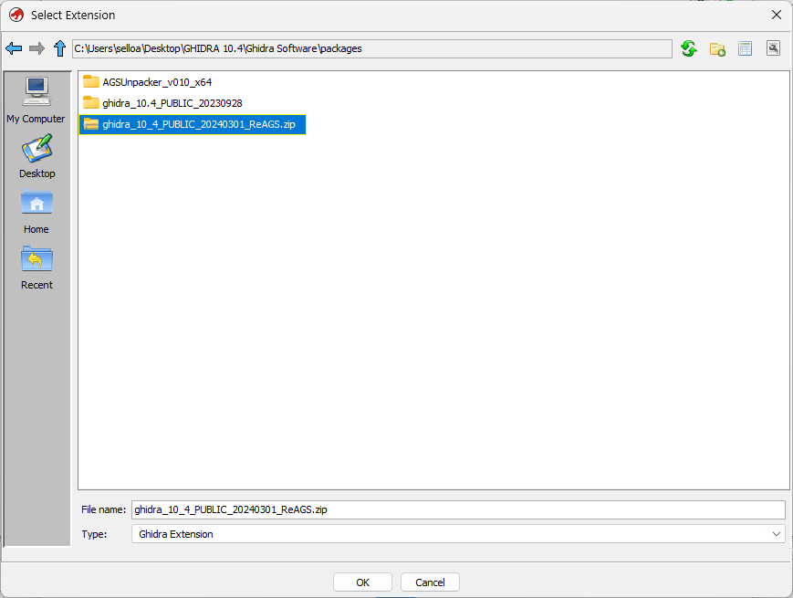
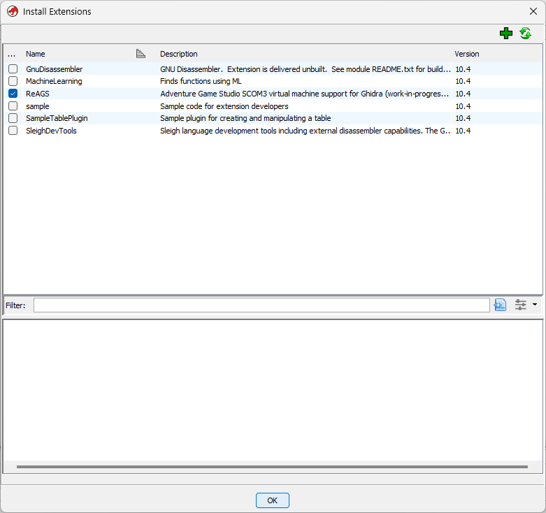
Important: Restart Ghidra completely — close it and open
ghidraRun.batagain — even if Ghidra does not tell you to. ReAGS may not work until you do.
.scom3 fileFile → New Project...Non-Shared Project and click Next.Finish.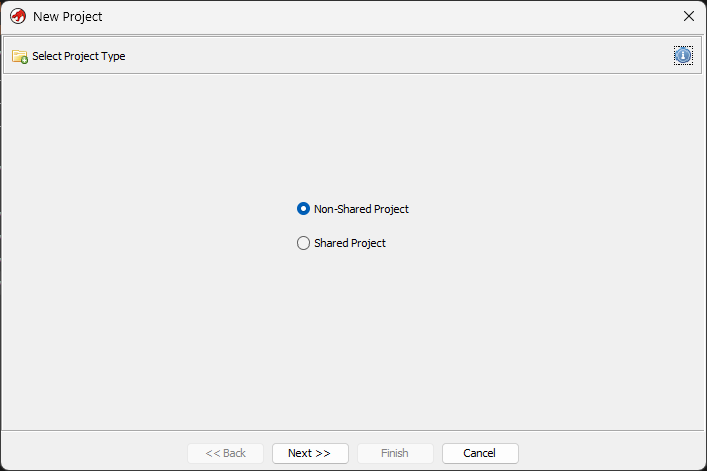
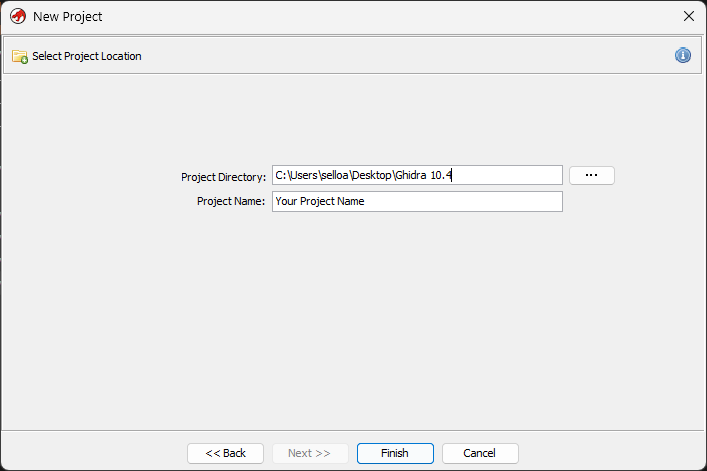
Tip: ReAGS works on
.scom3script files, not the game.exe. A common first import isglobalscript.scom3. Pick any project name you like — e.g.MyGameScripts.
File → Import File...scripts folder from Step 1..scom3 file and click OK / Open.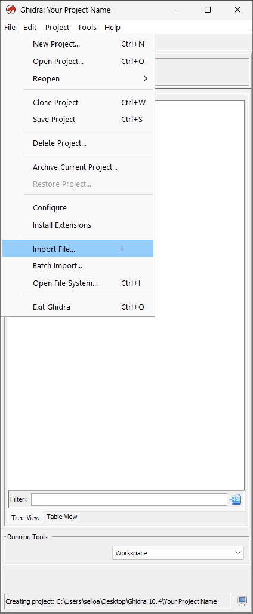
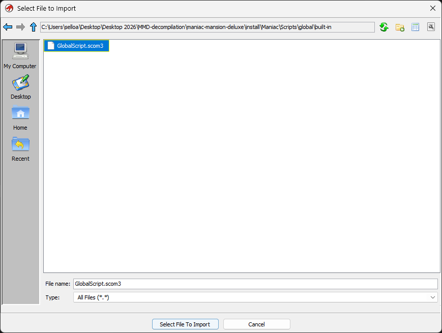
Before you confirm the import, verify these two lines:
| Field | Expected value |
|---|---|
| Format | Adventure Game Studio compiled script (scom3) |
| Language | AGSVM:LE.32:default:default — AGSVM is the important part |
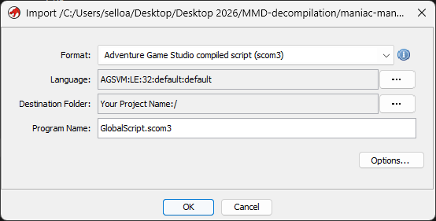
OK to import.OK.If Format or Language look wrong: ReAGS is probably not installed or not loaded. Go back to Step 5, confirm the extension is enabled, restart Ghidra, and try again.
.scom3 file — or right-click it and choose Open With → CodeBrowser.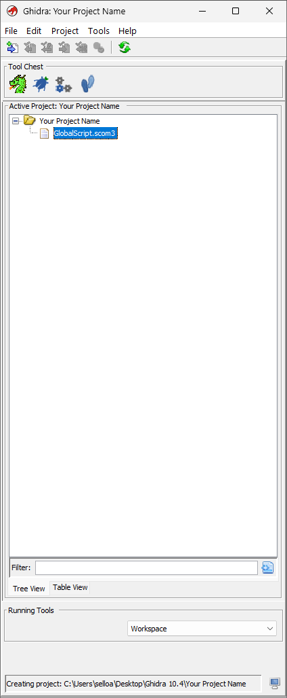
Yes.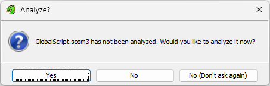
Scom3 Function AnalyzerScript format analyzerAnalyze.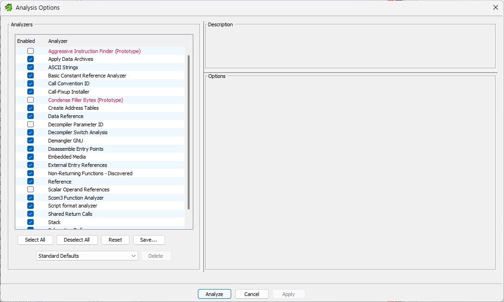
Wait for analysis to finish. Progress appears in the status bar at the bottom of CodeBrowser; when analysis is done, that progress indicator stops and you can click functions in the Symbol Tree.
You are almost done. You can jump ahead to Step 9 (Export) now, or continue to Step 8 for a quick look around.
Important: Export your
.cfile (Step 9) before closing the CodeBrowser window. ReAGS may not keep your analysis when you close it.
This step shows you where Ghidra puts the readable-ish output. You do not need to understand everything here.
Symbol Tree.Functions.game_start, SetObjectPosition$3, dialog_request_1) rather than auto-generated names like FUN_08001234.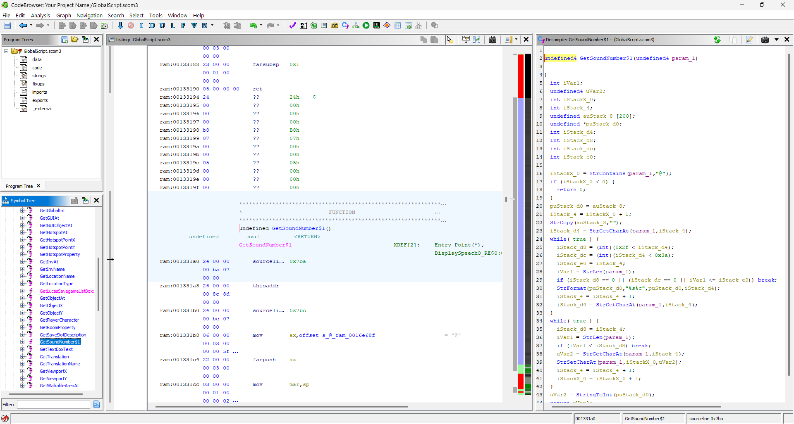
undefined GetSoundNumber$1
The output will not match the original AGS source file line-for-line — expect odd variable names, missing structure, and some functions that decompile poorly. Many users still find it readable enough to reconstruct lost script logic.
For deeper reading after this tutorial, see Further reading below.
File → Export Program...C/C++..scom3 file.globalscript_export (Ghidra adds the .c extension).OK.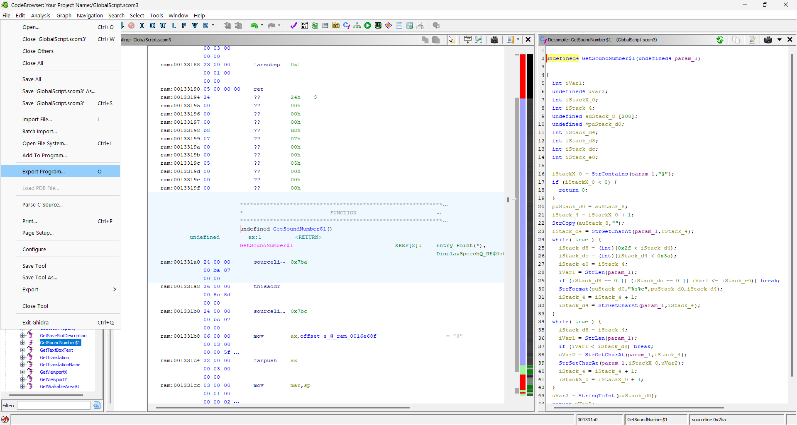
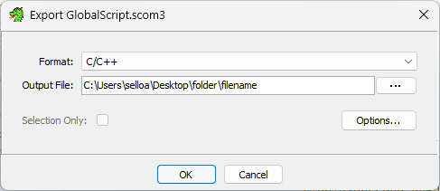
.c file on disk (e.g. globalscript_export.c) containing pseudo-C for the decompiled functionsOpen the exported file in Notepad or any text editor.
If it feels like looking into the Matrix or a magic 8 ball, you are on the right track.
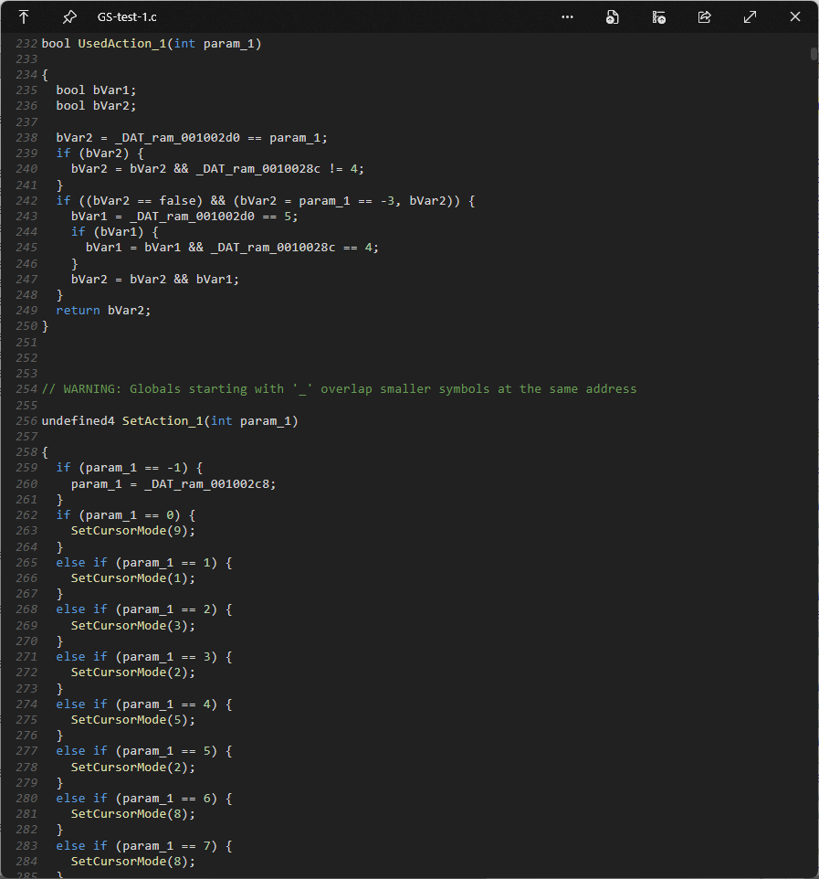
Use this to confirm you completed every stage:
.scom3 files with AGSUnpackerghidraRun.bat).zip and restarted Ghidra.scom3 — Format and Language matched the expected valuesFile → Install Extensions... and verify ReAGS is checked.bin, not ...\bin itself.bin\java.exe exists inside the folder you chose.?? at function addresses, try: select the code memory block → right-click → Disassemble → run Analysis again.scripts folderUnpack Assets first, then Extract Scripts from Assets — in that order..exe, not a shortcut or unrelated file.scripts folder should appear on disk — verify once and add a screenshot path]The following is paraphrased from the ReAGS README and its Known issues list — not original guidance from this tutorial.
ReAGS is a Ghidra 10.4 plugin (same author as AGSUnpacker). The README describes the project as halfway finished and no longer being developed. ReAGS 20240301 is the only release listed at this time.
The author notes that ReAGS can still be used in its current state, but that users should not expect a smooth experience.
Known issue (major): analysis state is not saved into project files. According to the README, closing the CodeBrowser window can lose all work from that session — so export the .c file before closing Ghidra.
The README also lists incorrect decompilation as a known issue; the author’s wording is that this becomes obvious when reviewing the output.
[TODO: Optional — link to assembly/listing as fallback when decompilation fails (author note in Page build notes).]
| Resource | URL |
|---|---|
| Ghidra (official site) | https://ghidra-sre.org/ |
| Ghidra 10.4 download | https://github.com/NationalSecurityAgency/ghidra/releases/tag/Ghidra_10.4_build |
| Ghidra on GitHub | https://github.com/NationalSecurityAgency/ghidra |
| Ghidra-ReAGS 20240301 | https://github.com/adm244/Ghidra-ReAGS/releases/tag/20240301 |
| Ghidra-ReAGS (repo) | https://github.com/adm244/Ghidra-ReAGS |
| AGSUnpacker v010 | https://github.com/adm244/AGSUnpacker/releases/tag/v010 |
| .NET 6 Desktop Runtime | https://dotnet.microsoft.com/en-us/download/dotnet/6.0 |
| Temurin JDK 17 (Adoptium) | https://adoptium.net/temurin/releases/?version=17 |
| Ghidra overview (Wikipedia) | https://en.wikipedia.org/wiki/Ghidra |